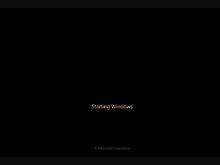

Microsoft Windows 7 |
|
|---|---|
|  |
Version :-Proffesional,Ultimate,Home Basic etc.
Release Date :- October 2009 Founder :- Bill Gates Comapany :- Microsoft |
|
Considered by many as what Windows Vista should have been, Windows 7 was first released in October 2009. It was intended to fix all the problems and criticism faced by Vista, with slight tweaks to its appearance and a concentration on user-friendly features and less “dialogue box overload”. It was faster, more stable and easier to use, becoming the operating system most users and business would upgrade to from Windows XP, forgoing Vista entirely. Handwriting recognition debuted in 7, as did the ability to “snap” windows to the tops or sides of the screen, allowing faster more automatic window resizing. |
|